Prática 1.5 — Equilíbrio Heterogêneo (Sistema Ternário e Termodinâmica da Solubilidade)
Duas fases, uma aparência de leite
0:00 · 108s · 6 ações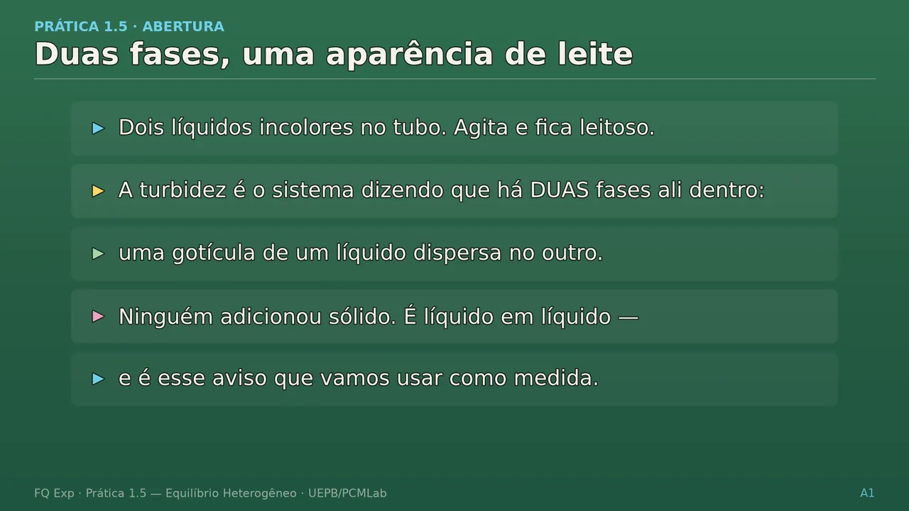
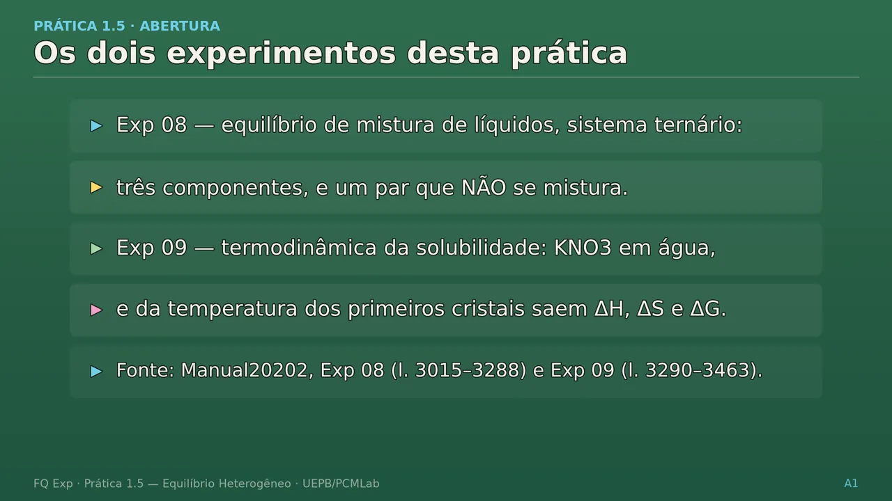
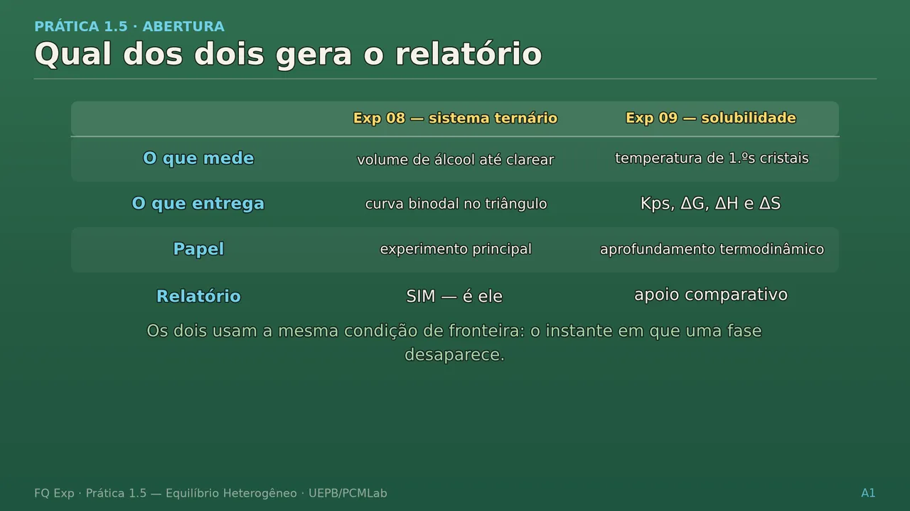
Dois líquidos incolores num tubo de ensaio. Você agita e a mistura fica leitosa — esbranquiçada, como leite diluído. Ninguém adicionou nada sólido: a turbidez é o próprio sistema avisando que existem duas fases ali dentro, uma gotícula de um líquido dispersa no outro. É desse aviso que esta prática inteira vai tratar: medir o quanto de um terceiro líquido é preciso para fazer a turbidez desaparecer.
A prática tem dois experimentos, e eles conversam entre si. O primeiro é o equilíbrio de mistura de líquidos de sistema ternário: três componentes, dois que se misturam em qualquer proporção e um par que não se mistura, e o resultado é o diagrama de solubilidade. O segundo é a termodinâmica da solubilidade: um sal, o nitrato de potássio, e a partir da temperatura em que os primeiros cristais aparecem, entalpia, entropia e energia livre de Gibbs.
Como os dois se organizam. O experimento oito é o que dá nome à prática, e é ele que gera o relatório: construir o diagrama de solubilidade do sistema ternário e obter a linha de solubilidade das misturas na temperatura ambiente. O experimento nove é o aprofundamento termodinâmico: calcular a constante de equilíbrio da dissolução e, dela, a energia livre de Gibbs, a entalpia e a entropia do processo.
Fase
1:48 · 158s · 10 ações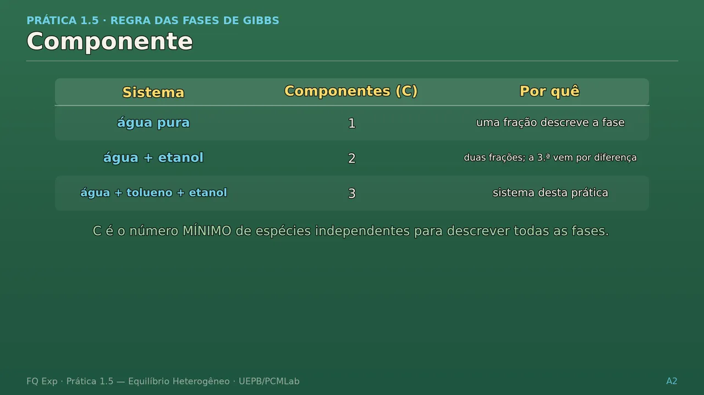
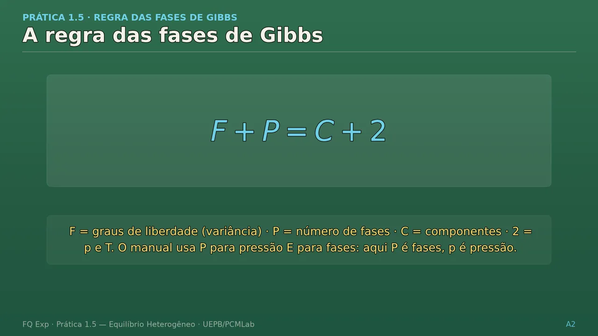
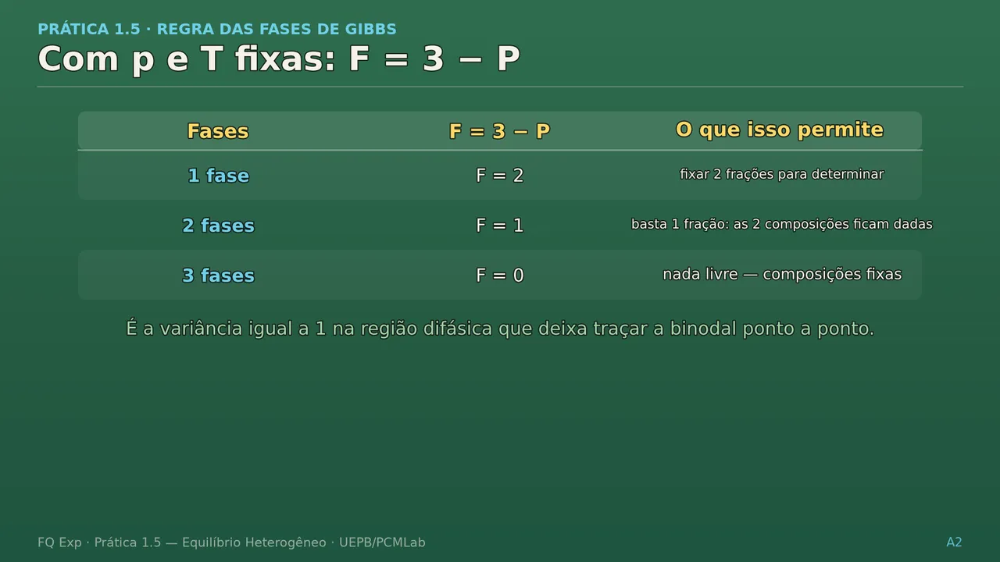
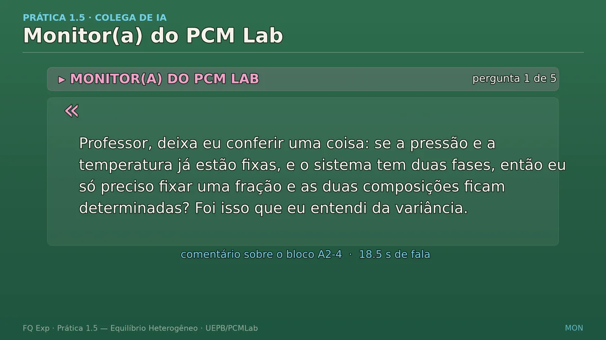
Antes do triângulo, três definições que o pré-relatório pede. Fase é uma porção homogênea do sistema, fisicamente distinta das vizinhas e separável por meios mecânicos. Óleo sobre água são duas fases: há uma superfície entre eles, e dá para separar com uma pipeta. Água e etanol, depois de agitados, são uma fase só — não há superfície nenhuma, e nenhum filtro os separa.
Componente é o número mínimo de espécies independentes necessárias para descrever a composição de todas as fases do sistema. Água pura é um componente. Água com etanol são dois, porque a composição de cada fase se escreve com duas frações — a terceira vem por diferença. O sistema desta prática é ternário: água, um hidrocarboneto aromático e álcool etílico, três componentes.
A regra das fases de Gibbs é a equação F mais P igual a C mais dois. F é o número de graus de liberdade, a variância: quantas variáveis intensivas podem variar independentemente sem perturbar o número de fases em equilíbrio. P é o número de fases. C é o número de componentes. E o dois são as duas variáveis que sempre existem num sistema qualquer: a pressão e a temperatura.
Agora a consequência que interessa. Trabalhando na temperatura e na pressão da bancada — fixadas, portanto — a regra fica F igual a três menos P. Com uma fase, a variância é dois: preciso fixar duas frações para determinar a composição. Com duas fases, a variância é um: basta fixar uma única fração e as duas composições ficam determinadas. É por isso que a curva de solubilidade pode ser medida ponto a ponto, e é por isso que a linha de amarração liga duas composições que dependem uma da outra.
▸ MONITOR(A) DO PCM LAB: Professor, deixa eu conferir uma coisa: se a pressão e a temperatura já estão fixas, e o sistema tem duas fases, então eu só preciso fixar uma fração e as duas composições ficam determinadas? Foi isso que eu entendi da variância.
O triângulo de Stokes e Roozeboom
4:26 · 173s · 8 ações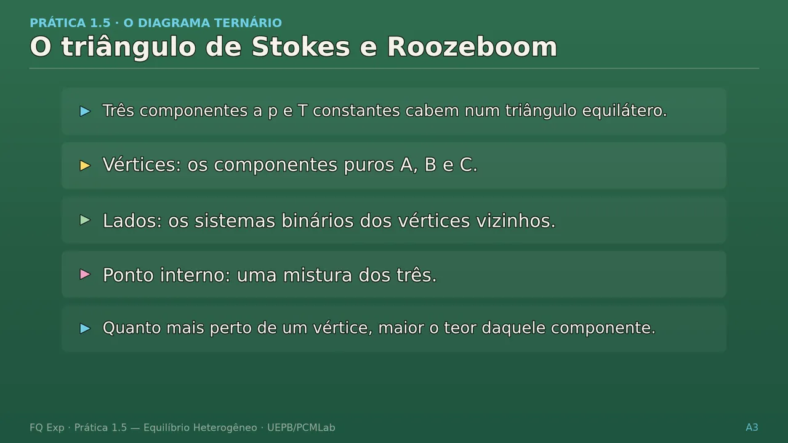
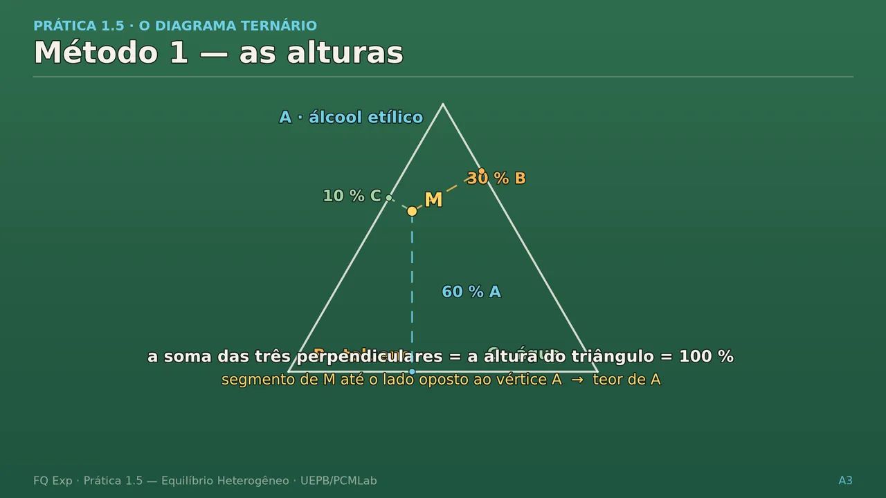
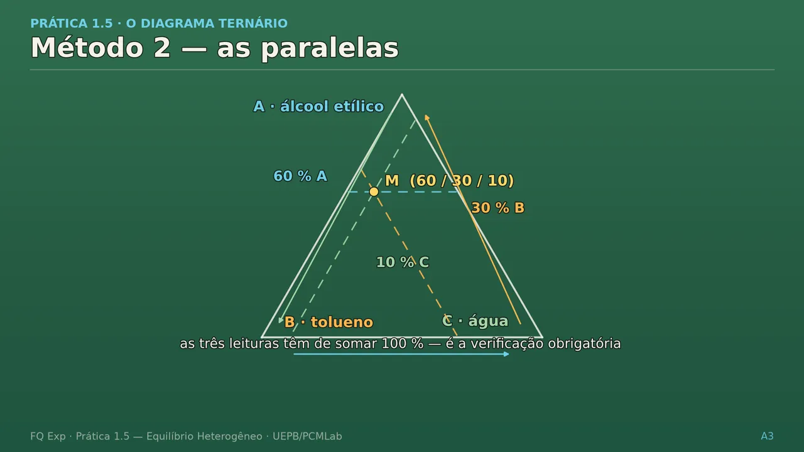
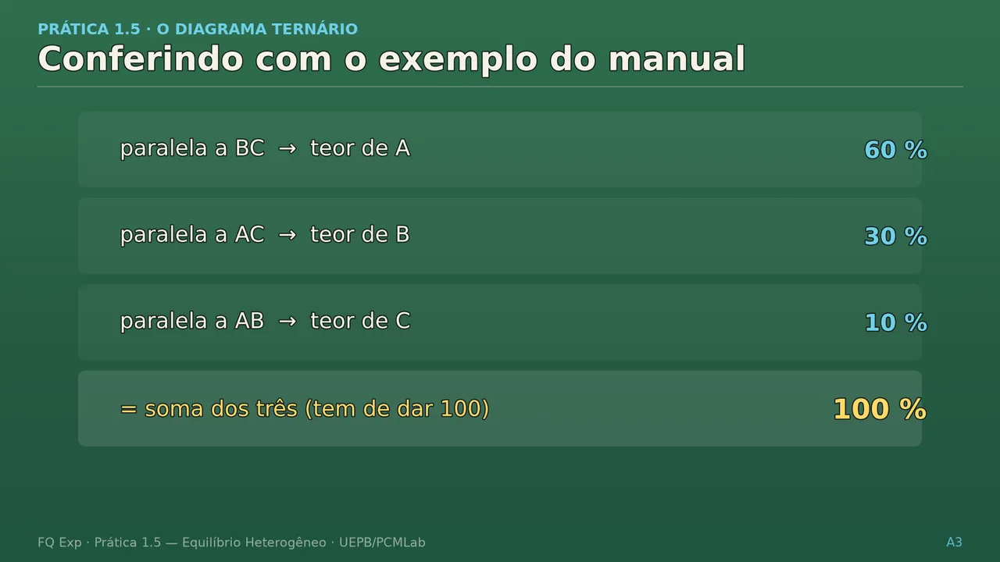
Sistema de três componentes à pressão e temperatura constantes se representa num triângulo equilátero, o diagrama de Stokes e Roozeboom. Os três vértices são os componentes puros. Os lados são os sistemas binários dos vértices vizinhos. E todo ponto do interior é uma mistura dos três. Quanto mais perto um ponto está de um vértice, maior a porcentagem daquele componente na mistura.
Primeiro método de leitura, o das alturas. A soma das distâncias de qualquer ponto interior até os três lados é igual à altura do triângulo. Tomando a altura como cem por cento, cada perpendicular dá a porcentagem do componente do vértice oposto àquele lado. Um ponto bem no centro do triângulo é uma mistura de partes iguais.
Segundo método, o das paralelas, que é o mais rápido na mão. Cada lado é uma escala de zero a cem por cento, lida no mesmo sentido de giro em todos os lados. Um segmento paralelo a um lado une composições de mesmo teor do componente oposto. Então a porcentagem de cada componente se lê na escala do lado em que a paralela toca — e a soma das três tem de dar cem.
Vamos conferir com o exemplo do próprio manual: uma mistura com sessenta por cento do componente A, trinta por cento de B e dez por cento de C. Marca-se a paralela ao lado BC, que é a linha de sessenta por cento de A. Depois a paralela ao lado AC, que é a linha de trinta por cento de B. O cruzamento das duas é o ponto da mistura. E a paralela ao terceiro lado passa por esse mesmo ponto com dez por cento de C. É a verificação obrigatória: qualquer ponto se lê de três maneiras e as três têm de concordar.
Os três casos de miscibilidade
7:19 · 176s · 10 ações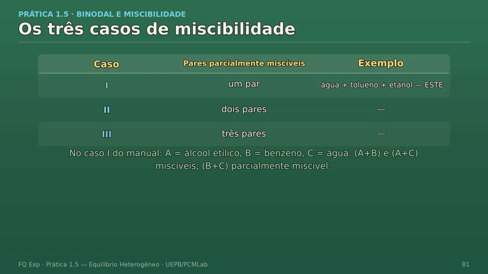
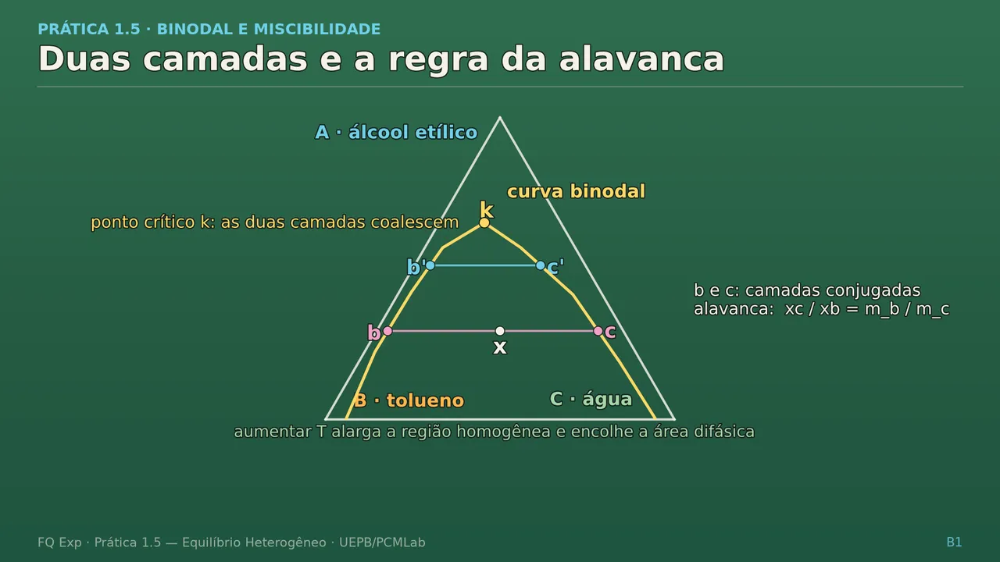
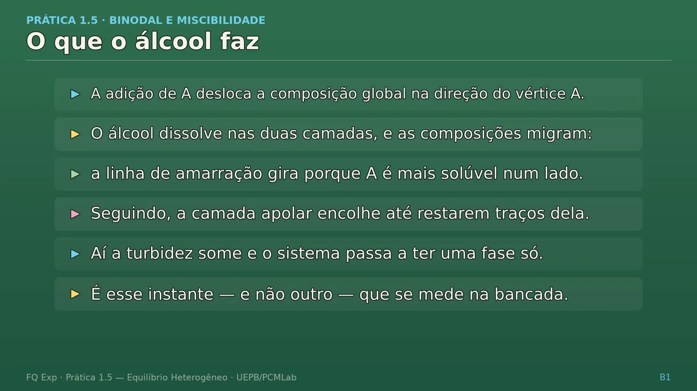
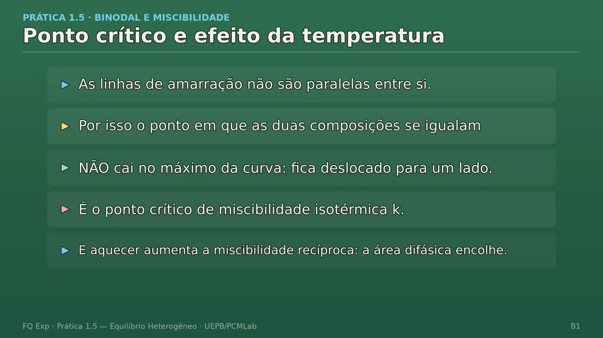
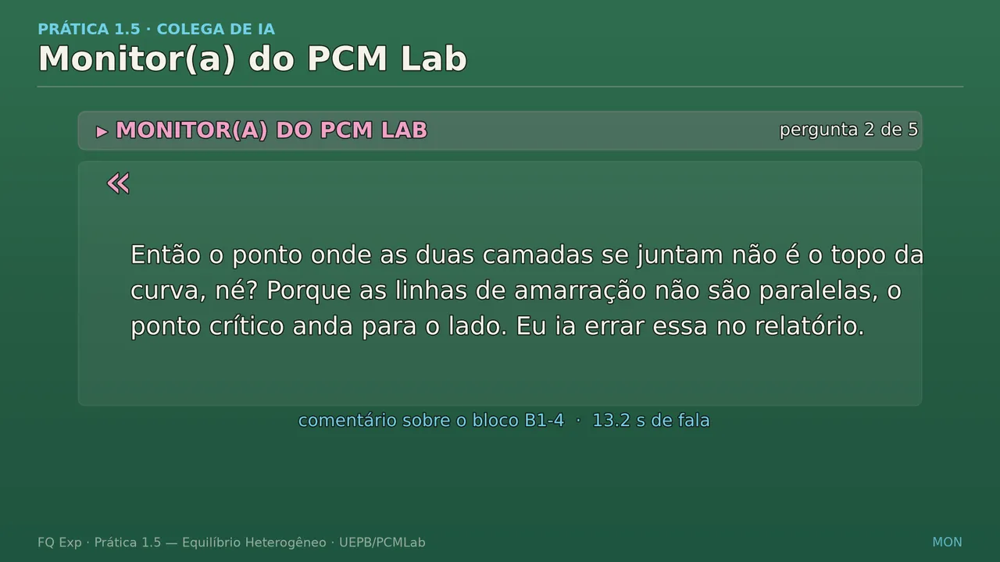
Voltando à turbidez. A miscibilidade recíproca de líquidos depende da natureza deles e da temperatura, e há três casos possíveis: um par de líquidos parcialmente miscíveis, dois pares, ou três pares. Este experimento trata do primeiro caso. Os pares A com B e A com C são completamente miscíveis; o par B com C é parcialmente miscível. No manual, A é o álcool etílico, B é o benzeno e C é a água.
O que acontece no tubo. A mistura de B com água, numa composição qualquer, separa em duas camadas: uma rica em hidrocarboneto e outra rica em água. As composições dessas duas camadas são os extremos de uma linha de amarração, e a proporção entre as massas segue a regra da alavanca: a massa da camada rica em água está para a da outra assim como a distância da composição global até a camada apolar está para a distância até a camada aquosa.
Agora entra o álcool. Adicionando A ao sistema, o ponto representativo da composição global caminha na direção do vértice A. O álcool se dissolve nas duas camadas, e as composições delas migram: se a linha de amarração gira, é porque o álcool é mais solúvel numa das camadas do que na outra. Continuando a adicionar, a camada apolar vai encolhendo até restarem traços dela: aí a turbidez desaparece e o sistema passa a ter uma fase única. Acima daquele ponto, até o vértice A, tudo é homogêneo. Esse é o instante que se mede na bancada.
Dois detalhes finos que a curva esconde. Primeiro: como as linhas de amarração não são paralelas entre si, o ponto em que as duas soluções conjugadas passam a ter a mesma composição não cai no máximo da curva — ele está deslocado para um dos lados. É o ponto crítico de miscibilidade isotérmica, e nele as duas camadas coalescem numa solução única. Segundo: aumentar a temperatura aumenta a miscibilidade recíproca e encolhe a área difásica. Por isso a temperatura ambiente se anota no início e no fim da série.
▸ MONITOR(A) DO PCM LAB: Então o ponto onde as duas camadas se juntam não é o topo da curva, né? Porque as linhas de amarração não são paralelas, o ponto crítico anda para o lado. Eu ia errar essa no relatório.
As substâncias do Exp 08
10:15 · 235s · 10 ações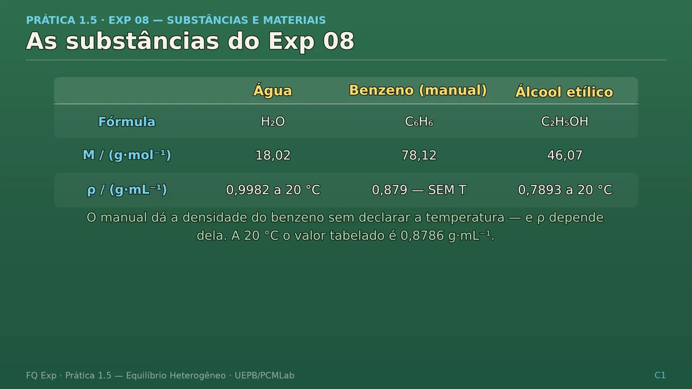
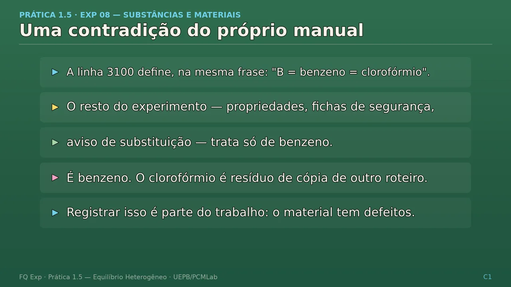
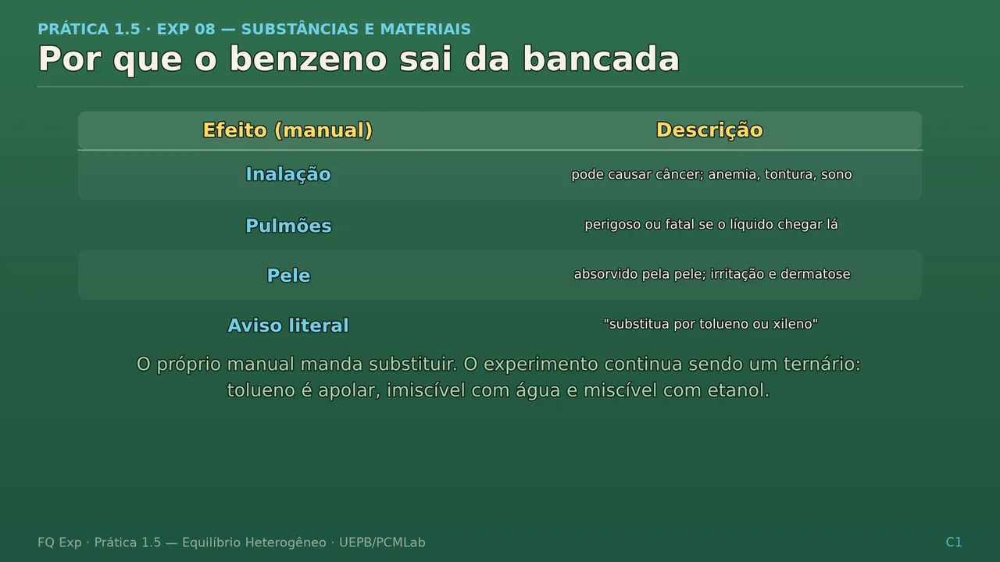
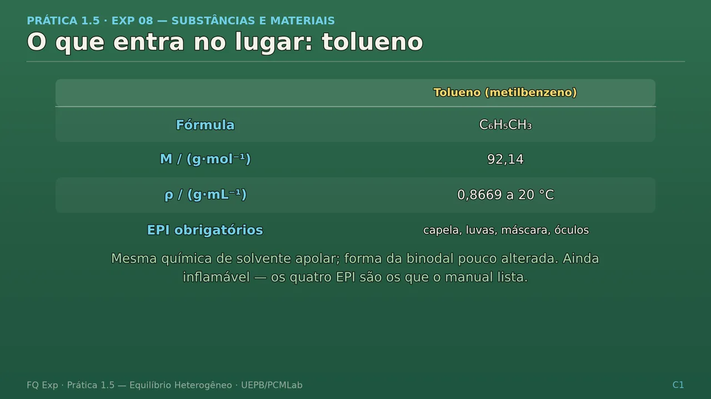
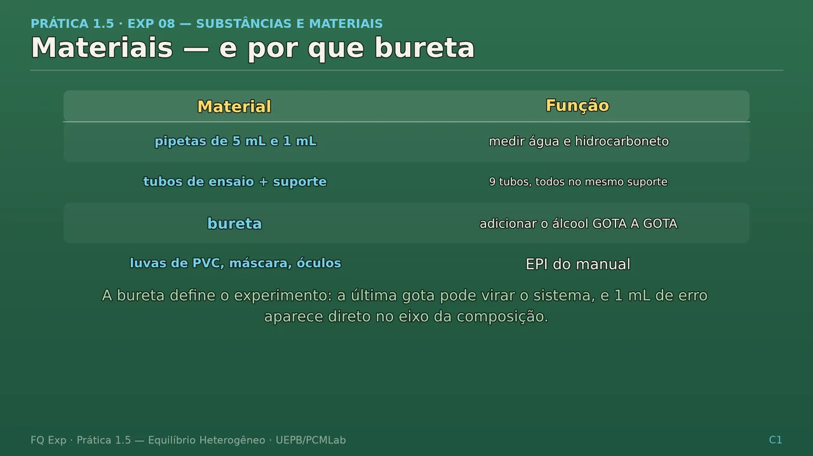
Substâncias do experimento oito: água destilada, benzeno e álcool etílico. O manual dá as propriedades do benzeno: massa molar 78,12 gramas por mol, líquido incolor de odor aromático, densidade absoluta 0,879 gramas por mililitro, fusão a 5,5 graus Celsius e ebulição a 80,1 graus Celsius. Um detalhe que vale registrar: o manual não declara a temperatura daquela densidade, e a densidade do benzeno cai com a temperatura — 0,879 só faz sentido com uma temperatura ao lado.
E tem uma segunda inconsistência na mesma linha do manual, que vale mostrar porque você vai esbarrar nela: ele escreve, na definição do sistema, que B é benzeno e clorofórmio ao mesmo tempo. O resto do experimento — propriedades, fichas de segurança, aviso de substituição — trata só de benzeno. É benzeno. E a razão de aparecer clorofórmio é provavelmente cópia de outro roteiro.
O benzeno é o problema desta prática. O manual é explícito: pode causar câncer, causa desordens sanguíneas como anemia, dá dor de cabeça, tontura, sonolência e náusea, é perigoso ou fatal se atingir os pulmões, e é absorvido pela pele. Na mesma ficha vem a recomendação, também literal: sempre que possível, substitua o benzeno por um solvente menos tóxico, como tolueno ou xileno. É o que esta disciplina faz.
Então as sessões rodam com tolueno, o metilbenzeno, massa molar 92,14 gramas por mol, densidade 0,8669 gramas por mililitro a vinte graus Celsius. Quimicamente ele é o substituto certo: também é um hidrocarboneto aromático apolar, imiscível com água e miscível com etanol, então a forma da curva binodal muda pouco. Ele ainda é inflamável e ainda exige capela, luvas de cano longo, máscara e óculos — o manual lista exatamente esses quatro.
Materiais: pipetas de cinco e de um mililitro, tubos de ensaio, suporte de madeira para os tubos, bureta, e os equipamentos de proteção individual. A bureta é o instrumento que define o experimento, e não é por acaso: o álcool tem de entrar gota a gota, porque o ponto final é visual, a última gota pode passar do ponto, e um erro de um mililitro aparece direto no eixo da composição.
O procedimento do manual
14:10 · 184s · 10 ações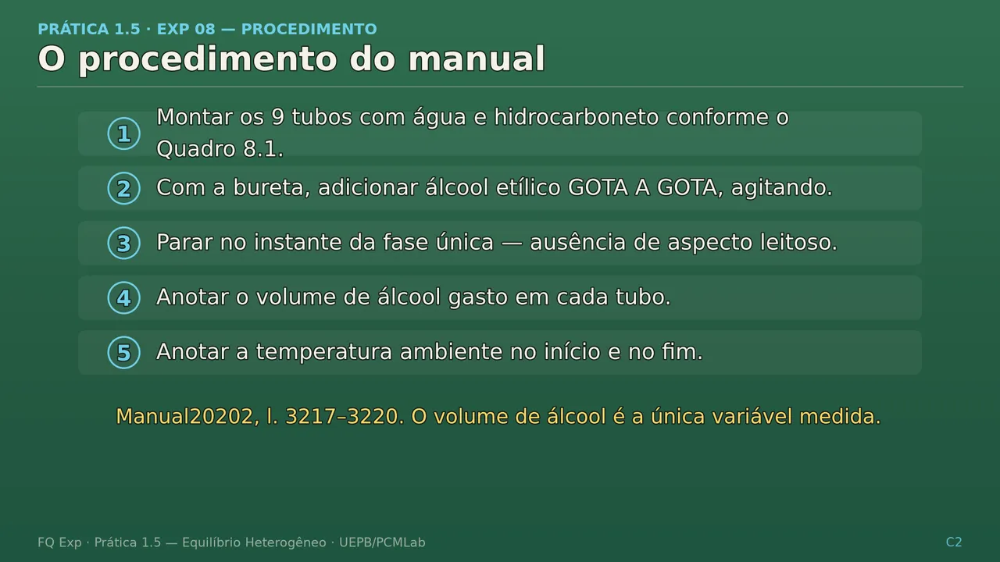
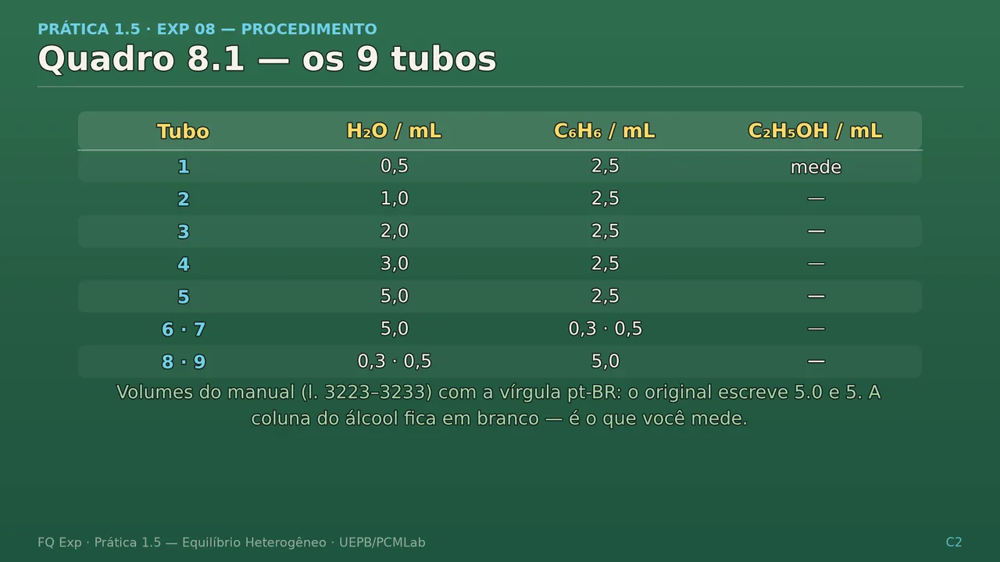
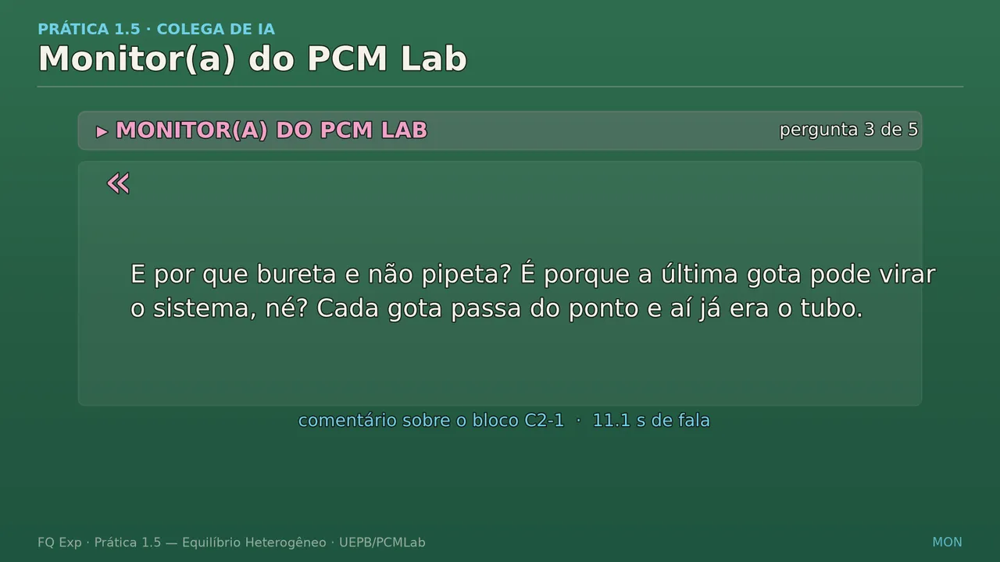
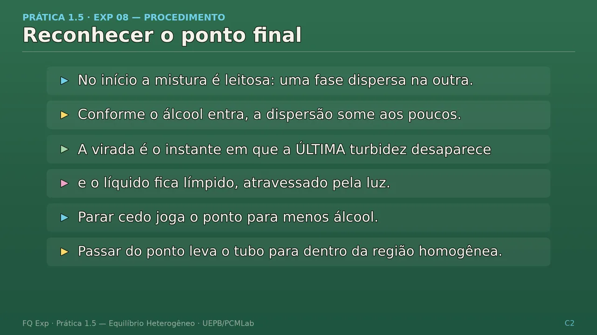
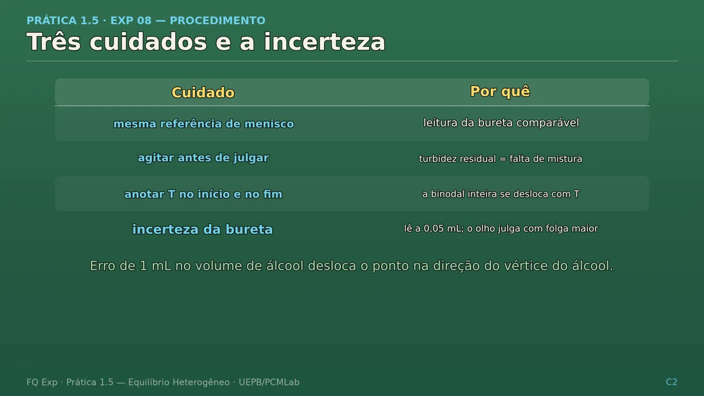
O procedimento do manual, literalmente: com o auxílio de uma bureta, adicionar em cada tubo de ensaio, de acordo com as quantidades de água destilada e de hidrocarboneto do quadro oito ponto um, gota a gota, quantidades crescentes de álcool etílico até que se obtenha uma fase única — ou seja, a ausência do aspecto leitoso. Anotar o volume de álcool gasto em cada tubo. É isso: são nove tubos, e cada um tem o seu volume de álcool.
O quadro oito ponto um em cinco linhas. Tubos um a cinco: sempre dois vírgula cinco mililitros de hidrocarboneto, e a água crescendo — zero vírgula cinco, um, dois, três e cinco mililitros. Tubos seis e sete: cinco mililitros de água com zero vírgula três e zero vírgula cinco mililitros de hidrocarboneto. Tubos oito e nove: o inverso, zero vírgula três e zero vírgula cinco mililitros de água com cinco mililitros de hidrocarboneto. A coluna do álcool fica em branco: é ela que você preenche.
▸ MONITOR(A) DO PCM LAB: E por que bureta e não pipeta? É porque a última gota pode virar o sistema, né? Cada gota passa do ponto e aí já era o tubo.
Como se reconhece o ponto final, porque é aqui que se erra. A mistura começa leitosa, com uma fase dispersa na outra. Conforme o álcool entra, a dispersão some aos poucos, e o instante da virada é aquele em que a última turbidez desaparece e o líquido fica límpido, com a luz atravessando. Parar cedo, achando que já clareou, desloca o ponto para menos álcool. Continuar depois enche o tubo de álcool e leva o ponto para o interior da região homogênea. Nas duas vezes o diagrama se deforma.
Três cuidados de bancada que valem o resultado. Um: manter sempre a mesma ordem e o mesmo sentido de leitura na bureta, lendo sempre o mesmo ponto do menisco. Dois: agitar antes de julgar — a turbidez residual pode ser só falta de mistura. Três: anotar a temperatura ambiente no início e no fim do quadro, porque a curva inteira se desloca com ela. E lembre da incerteza: a bureta lê até zero vírgula zero cinco mililitro, mas o olho julga o ponto final com folga bem maior.
Volume não é massa: m = V · ρ(T)
17:14 · 220s · 8 ações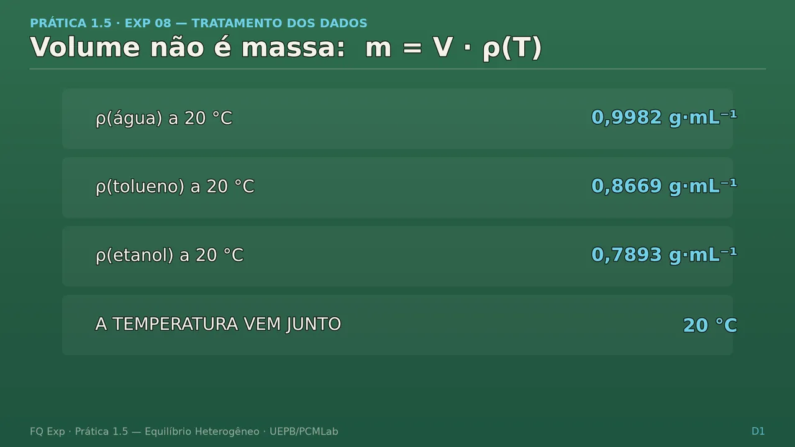
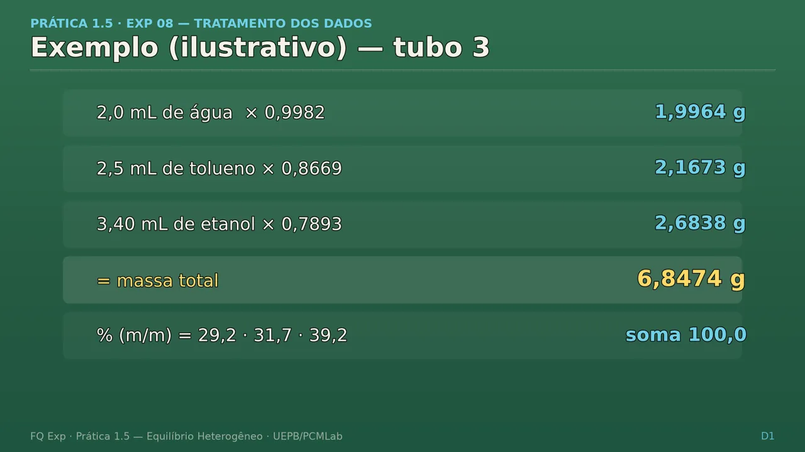
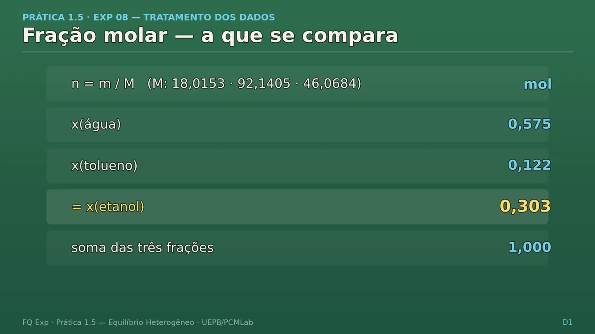
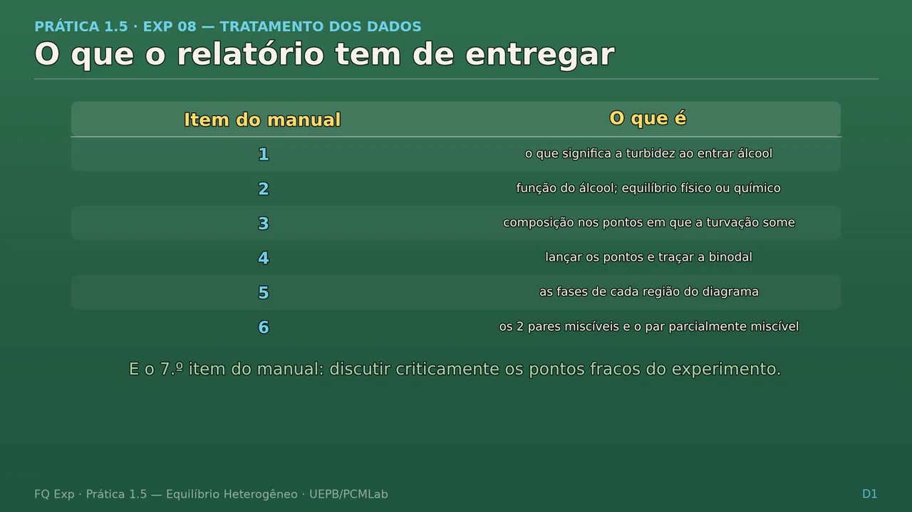
Para colocar os pontos no triângulo, os volumes precisam virar porcentagens em massa. Massa é o volume multiplicado pela massa específica, e aqui está a regra que já deu erro em outras práticas deste projeto: a massa específica tem de vir com a temperatura declarada. Vamos usar vinte graus Celsius. Água: zero vírgula nove nove oito dois. Tolueno: zero vírgula oito seis seis nove. Etanol: zero vírgula sete oito nove três gramas por mililitro.
Um exemplo de conta, e ele é ilustrativo — não é uma medida de bancada. Tubo três: dois mililitros de água dão um vírgula nove nove seis quatro gramas; dois vírgula cinco mililitros de tolueno dão dois vírgula um seis sete três gramas; e suponha três vírgula quatro mililitros de etanol gastos, que dão dois vírgula seis oito quatro gramas. A massa total é seis vírgula oito quatro sete quatro gramas. Dividindo cada massa pelo total e multiplicando por cem, sai vinte e nove vírgula dois por cento de água, trinta e um vírgula sete por cento de tolueno e trinta e nove vírgula dois por cento de etanol. Somando, cem vírgula zero.
O manual aceita composição mássica ou molar, mas só a fração molar é comparável com dados de literatura. Para ela, divide-se cada massa pela massa molar: dezoito vírgula zero um cinco três para a água, noventa e dois vírgula um quatro para o tolueno, quarenta e seis vírgula zero sete para o etanol. No mesmo tubo três: zero vírgula quinhentos e setenta e cinco de água, zero vírgula cento e vinte e dois de tolueno e zero vírgula trezentos e três de etanol. As três somam um vírgula zero. É essa terna que entra no triângulo.
O que o relatório tem de entregar, segundo as aplicações do manual. Primeiro: explicar o que significa a turbidez que aparece quando se adiciona álcool à mistura de água e hidrocarboneto. Segundo: dizer qual é a função do álcool e se o equilíbrio envolvido é físico ou químico, justificando. Terceiro: calcular a composição de cada solução nos pontos em que a turvação desaparece — os nove pontos. Quarto: lançar os pontos no triângulo equilátero e traçar a curva binodal. Quinto: identificar as fases de cada região do diagrama. Sexto: dizer quais são os dois pares completamente miscíveis e qual é o par parcialmente miscível. E sétimo, discutir criticamente os pontos fracos do experimento.
A dissolução do nitrato de potássio
20:54 · 167s · 8 ações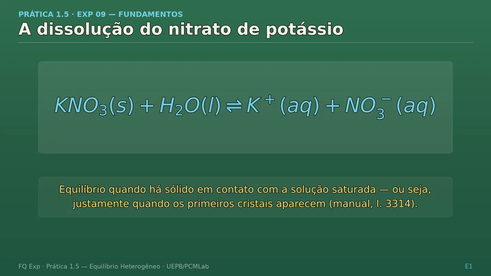
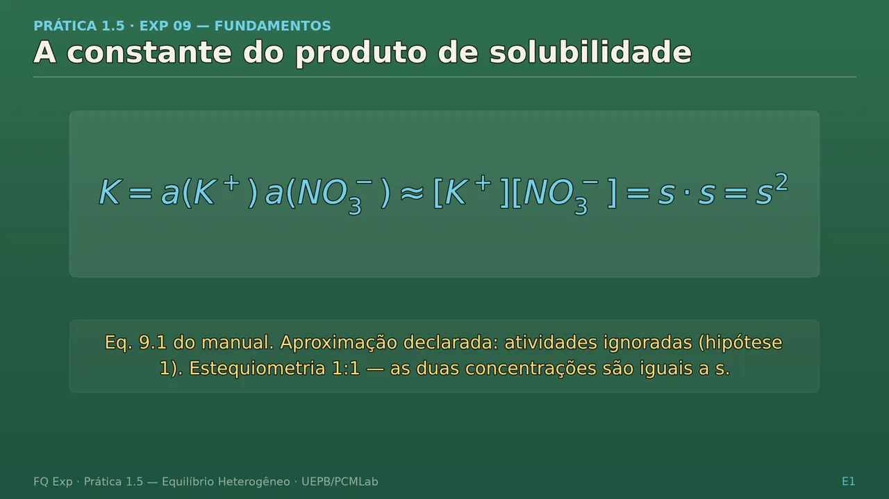
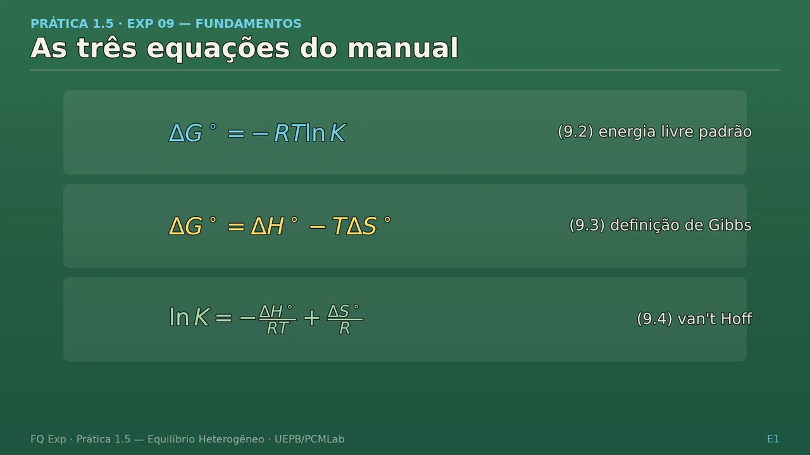
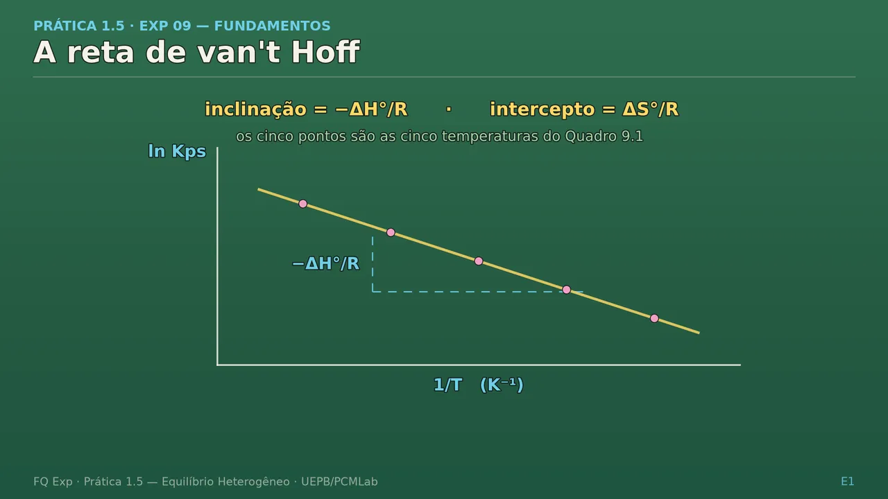
Agora o segundo experimento, que reaproveita tudo o que a regra das fases disse. Nitrato de potássio sólido em água: o cristal se desfaz em íons potássio e íons nitrato. Enquanto houver sólido em contato com a solução, o sistema está em equilíbrio — e a condição prática de equilíbrio, que o manual escreve com todas as letras, é justamente o aparecimento dos primeiros cristais.
A constante de equilíbrio do processo é o produto das atividades dos íons. Com a primeira hipótese simplificadora do manual — atividades ignoradas — ela vira o produto das concentrações. E como a estequiometria é de um para um, as duas concentrações são iguais à solubilidade s: s vezes s, ou seja, s ao quadrado. É a equação nove ponto um do manual: a constante do produto de solubilidade.
Três equações fecham o tratamento. A primeira: a energia livre padrão de Gibbs é menos R T vezes o logaritmo natural da constante de equilíbrio. A segunda: a energia livre é a entalpia menos a temperatura vezes a entropia — é a definição de Gibbs. Combinando as duas, sai a terceira, que é a forma de van't Hoff: o logaritmo da constante é igual a menos entalpia sobre R T, mais entropia sobre R. Repare no que isso significa graficamente.
Graficamente, van't Hoff diz que o logaritmo natural da constante, em função do inverso da temperatura absoluta, é uma reta. O coeficiente angular é menos entalpia padrão sobre R. O coeficiente linear é entropia padrão sobre R. Ou seja: medindo a solubilidade em várias temperaturas, um gráfico de papel devolve a entalpia e a entropia da dissolução. É o método do experimento nove — e a razão de ele medir em cinco temperaturas, e não em uma.
As duas hipóteses do manual
23:41 · 278s · 14 ações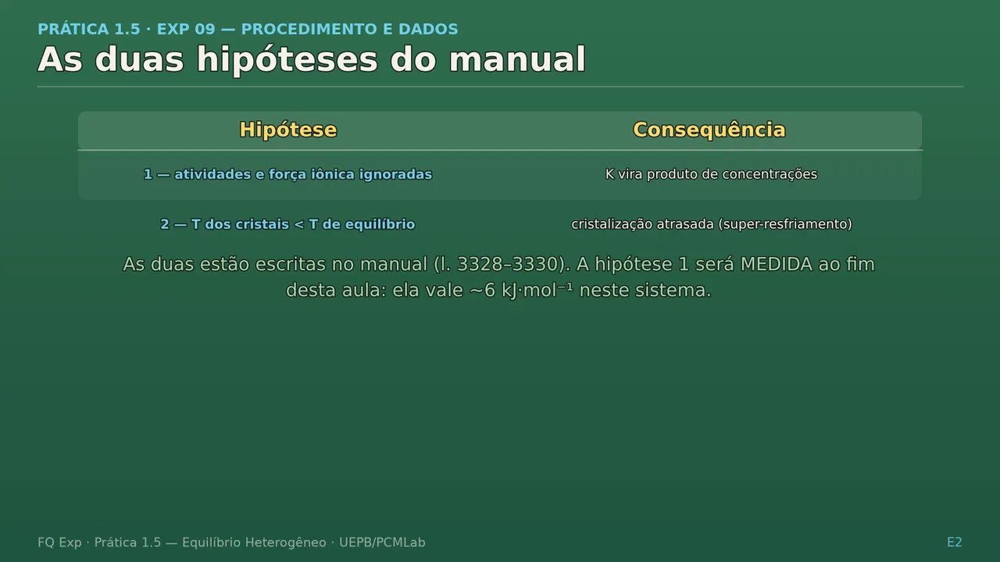
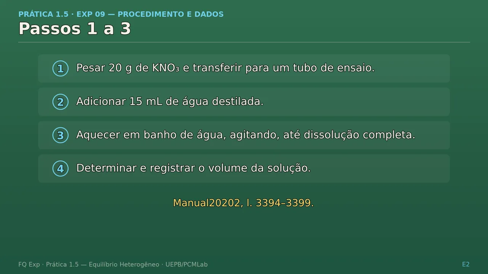
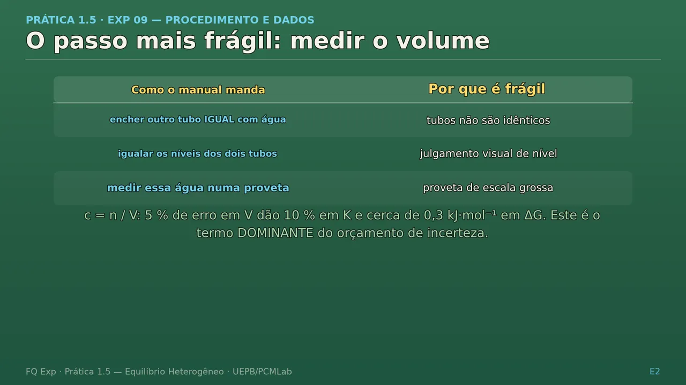
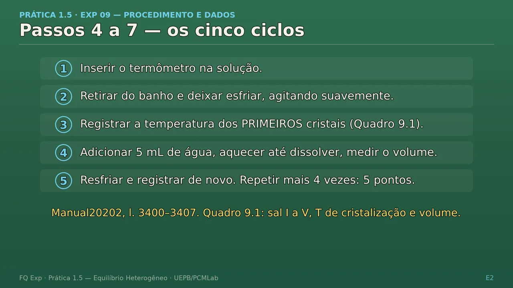
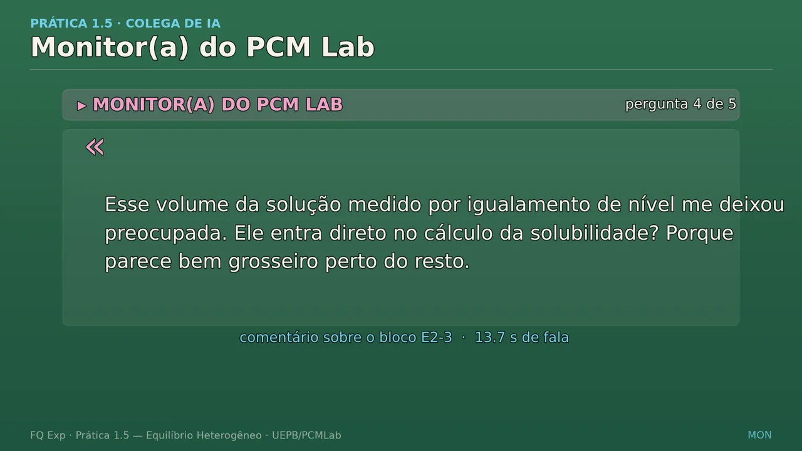
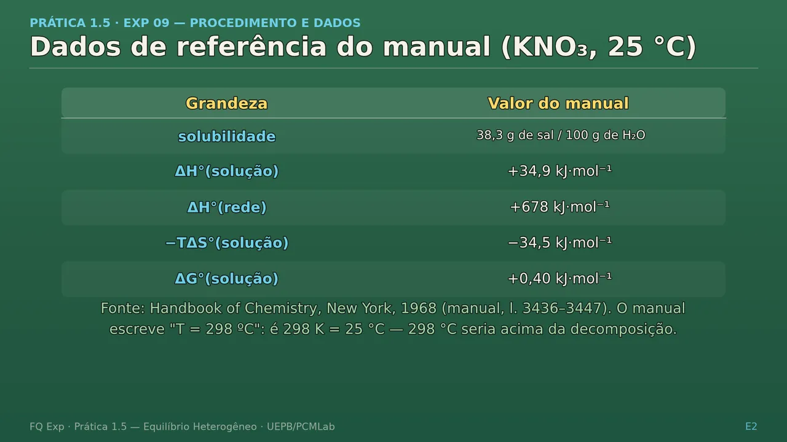
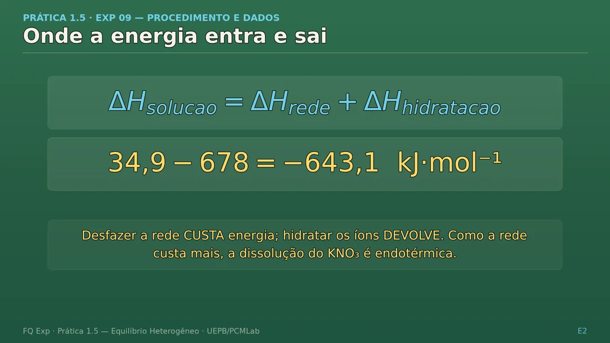
As hipóteses simplificadoras, porque é delas que saem os erros. O manual declara duas. Primeira: as atividades dos íons e a força iônica não são consideradas. Segunda: as temperaturas em que os cristais se tornam visíveis são provavelmente menores que a temperatura de equilíbrio — porque a solução precisa ser resfriada além do ponto para o cristal nascer. Guarde as duas: voltaremos a elas com números.
Procedimento, passo a passo, como está no manual. Passo um: pesar vinte gramas de nitrato de potássio e transferir para um tubo de ensaio. Passo dois: adicionar quinze mililitros de água destilada e aquecer o tubo num banho de água, agitando, até a dissolução completa do sal. Passo três: determinar e registrar o volume da solução.
O passo três merece atenção, porque é a medida mais frágil do experimento. O manual manda fazer assim: encher outro tubo de ensaio, igual ao primeiro, com água, até os níveis dos dois tubos ficarem iguais, e medir essa água numa proveta. É uma medida de igualamento visual de nível. Como a concentração é o número de mols dividido por esse volume, a incerteza do volume entra direto — e entra ao quadrado na constante. Anote: esse é o termo dominante do orçamento.
Passos quatro a sete. Inserir o termômetro na solução, remover o tubo do banho e deixar esfriar agitando suavemente. Registrar a temperatura de aparecimento dos primeiros cristais no quadro nove ponto um. Depois adicionar cinco mililitros de água, aquecer até dissolver de novo, medir o volume e repetir o resfriamento. Repete mais quatro vezes, sempre com cinco mililitros: cinco ciclos, cinco temperaturas, cinco volumes. É o quadro inteiro com que você vai trabalhar.
▸ MONITOR(A) DO PCM LAB: Esse volume da solução medido por igualamento de nível me deixou preocupada. Ele entra direto no cálculo da solubilidade? Porque parece bem grosseiro perto do resto.
Os números de referência que o manual cita, do Handbook of Chemistry de Nova York. Para o nitrato de potássio, a vinte e cinco graus Celsius: solubilidade de trinta e oito vírgula três gramas de sal por cem gramas de água; entalpia de solução trinta e quatro vírgula nove quilojoule por mol; entalpia de rede seiscentos e setenta e oito quilojoule por mol; e a energia livre de solução, zero vírgula quatro quilojoule por mol. Uma observação de leitura: o manual escreve 298 graus Celsius, mas é 298 kelvin, que é vinte e cinco graus Celsius. Duzentos e noventa e oito graus Celsius seria acima da decomposição do sal.
E o número que amarra os dois lados do processo, também do manual: a entalpia de solução é a entalpia de rede mais a entalpia de hidratação. A rede cristalina precisa ser desfeita — isso consome energia, seiscentos e setenta e oito quilojoule por mol. Os íons liberados são hidratados — isso devolve energia. Fazendo a conta: trinta e quatro vírgula nove menos seiscentos e setenta e oito dá menos seiscentos e quarenta e três vírgula um quilojoule por mol de hidratação. A dissolução é endotérmica porque a rede custa mais do que a hidratação devolve.
A receita do tratamento, em 5 passos
28:20 · 369s · 14 ações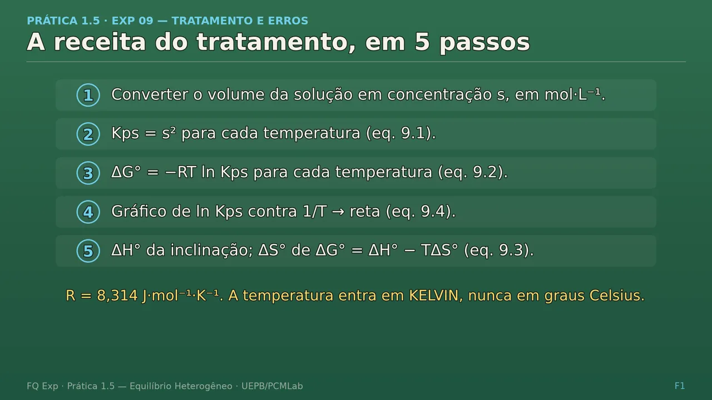
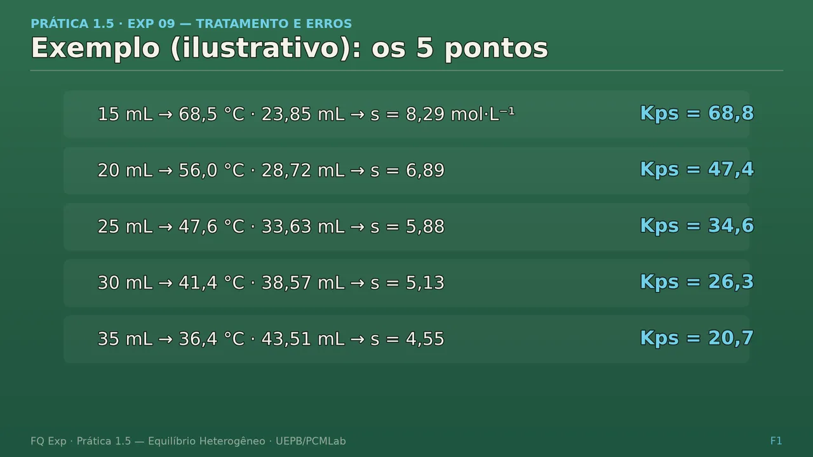
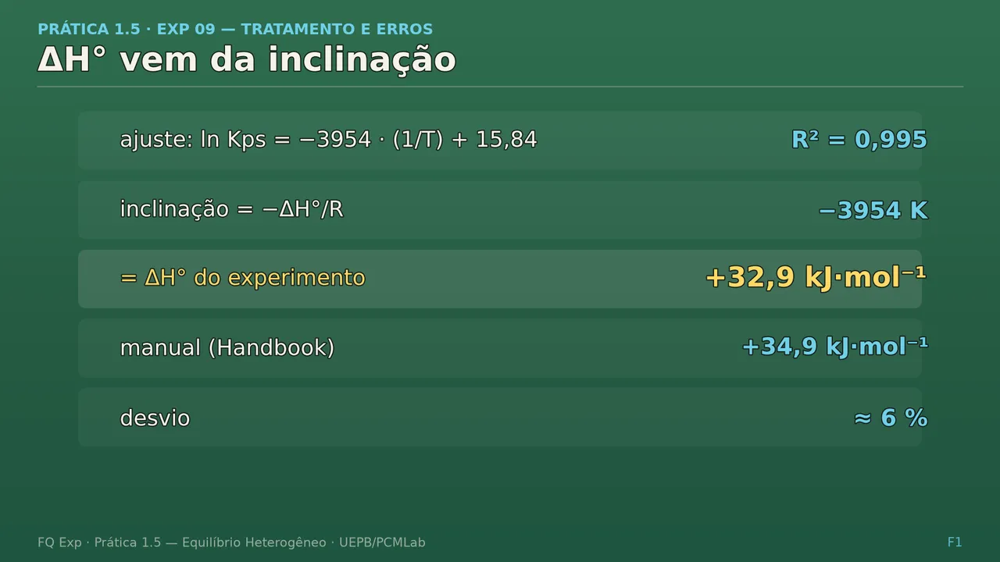
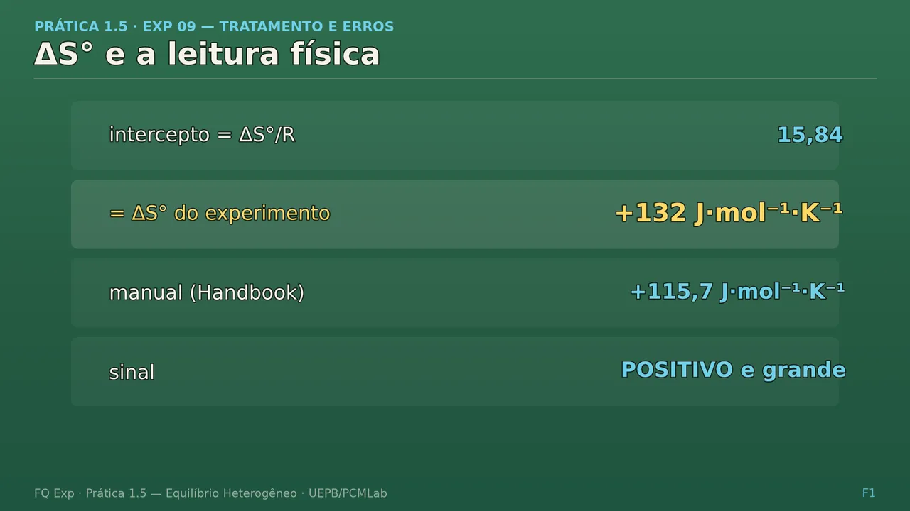
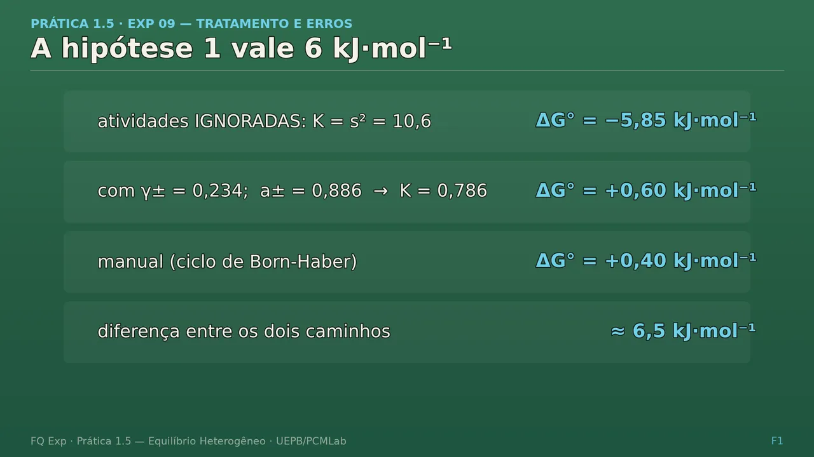
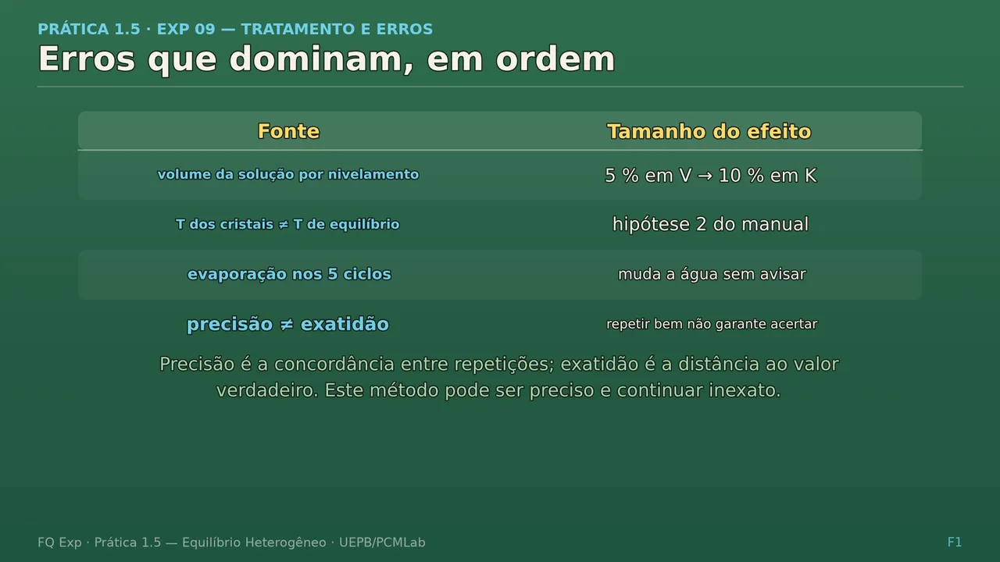
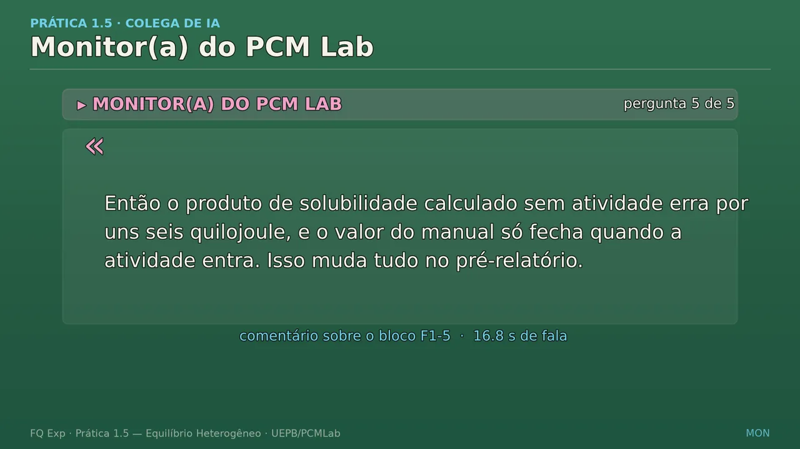
O tratamento, na ordem do manual. Para cada uma das cinco temperaturas: converter o volume em concentração, em mol por litro; elevar ao quadrado e ter a constante do produto de solubilidade; e aplicar menos R T logaritmo natural de K para ter a energia livre de Gibbs daquela temperatura. Cinco pontos, cinco constantes, cinco energias livres. R é oito vírgula três um quatro joule por mol kelvin, e a temperatura entra em kelvin, não em graus Celsius.
Um exemplo completo, e ele é ilustrativo, construído a partir da curva de solubilidade de referência — não é medida de bancada. Vinte gramas de sal e cinco adições de cinco mililitros de água. As temperaturas de aparecimento dos primeiros cristais caem de sessenta e oito vírgula cinco, para cinquenta e seis, quarenta e sete vírgula seis, quarenta e um vírgula quatro e trinta e seis vírgula quatro graus Celsius. As concentrações vão de oito vírgula três a quatro vírgula seis mol por litro, e as constantes de sessenta e nove a vinte. Um aviso sobre o próprio manual: ele diz que vai medir entre quarenta e sessenta graus, mas com a carga que ele mesmo prescreve a saturação acontece a quase sessenta e nove graus — fora daquela janela. E o volume da solução, que ninguém mediu aqui, vem da tabela de densidade do sal em função da concentração e da temperatura.
Com os cinco pontos, o gráfico de van't Hoff. Logaritmo natural da constante no eixo vertical, inverso da temperatura absoluta no horizontal. Os pontos alinham com coeficiente de determinação zero vírgula nove nove cinco — praticamente uma reta. A inclinação vale menos três mil novecentos e cinquenta e quatro kelvin. Como a inclinação é menos entalpia sobre R, a entalpia de solução sai trinta e dois vírgula nove quilojoule por mol. O manual cita trinta e quatro vírgula nove: quase seis por cento de diferença, considerando que o volume da solução foi estimado.
A entropia sai do coeficiente linear, que dá cento e trinta e dois joule por mol kelvin. E aqui está a leitura física da prática: a dissolução do nitrato de potássio é endotérmica, ela consome cerca de trinta e três quilojoule por mol, e mesmo assim acontece. Acontece porque a entropia aumenta muito — o cristal ordenado se desfaz em íons hidratados, dispersos e numerosos. É um processo dirigido pela entropia, que só é espontâneo porque a temperatura multiplica esse ganho.
Falta o teste da primeira hipótese, e ele é o resultado mais interessante desta prática. Tomando o próprio dado do manual — trinta e oito vírgula três gramas por cem gramas de água, a vinte e cinco graus — a concentração sai três vírgula dois seis mol por litro, e a molalidade de saturação é três vírgula setenta e nove mol por quilograma. É a molalidade que entra na atividade. Com as atividades ignoradas, K vale dez vírgula seis e a energia livre dá menos cinco vírgula nove quilojoule por mol. Agora incluindo o coeficiente de atividade médio do nitrato de potássio nessa força iônica, que é zero vírgula duzentos e trinta e quatro na escala de molalidade — então a atividade média é a molalidade vezes esse coeficiente, e dá zero vírgula oito oito seis. Com ela, a constante cai para zero vírgula setenta e nove, e a energia livre vira mais zero vírgula seis quilojoule por mol. O manual cita mais zero vírgula quatro. Ou seja: a hipótese das atividades vale seis quilojoule por mol aqui — e o valor do manual só fecha quando ela é abandonada.
Erros que dominam, em ordem. Primeiro, o volume da solução por igualamento de nível: cinco por cento de erro no volume dão dez por cento na constante e cerca de zero vírgula três quilojoule na energia livre. Segundo, a temperatura de aparecimento dos cristais não é a temperatura de equilíbrio — o resfriamento atrasa a cristalização, e é a segunda hipótese que o manual declara. Terceiro, a evaporação durante os cinco ciclos, que muda o volume de água sem que ninguém perceba. E quarto: precisão não é exatidão. Precisão é a concordância entre repetições; exatidão é a distância ao valor verdadeiro. Este método pode ser preciso e continuar inexato.
▸ MONITOR(A) DO PCM LAB: Então o produto de solubilidade calculado sem atividade erra por uns seis quilojoule, e o valor do manual só fecha quando a atividade entra. Isso muda tudo no pré-relatório.
Recapitulando o Exp 08
34:28 · 275s · 13 ações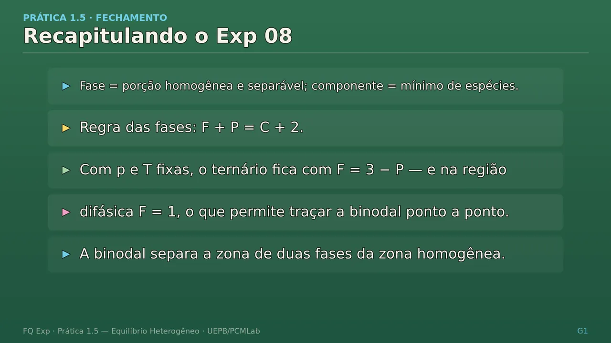
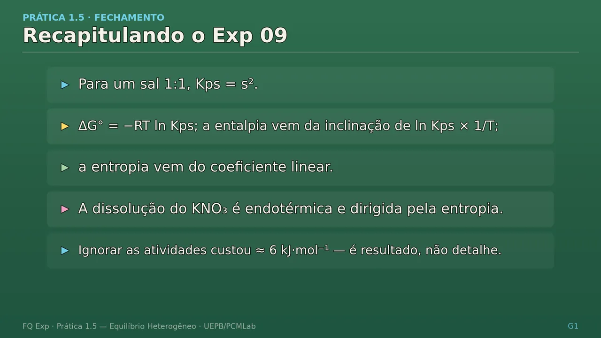
Recapitulando o experimento oito. Fase é porção homogênea e separável; componente é o número mínimo de espécies independentes. A regra das fases diz F mais P igual a C mais dois, e na bancada, com pressão e temperatura fixas, a ternária fica com variância igual a três menos P. O diagrama triangular lê composições pelos dois métodos, e a curva binodal separa a região de duas fases da região homogênea.
E o experimento nove. A constante do produto de solubilidade de um sal um para um é a solubilidade ao quadrado. A energia livre de Gibbs padrão vem dessa constante, a entalpia vem da inclinação da reta de van't Hoff e a entropia vem do coeficiente linear. A dissolução do nitrato de potássio é endotérmica e dirigida pela entropia, e ignorar as atividades custou seis quilojoule por mol — não é detalhe, é resultado.
Onde isso se usa. Diagramas ternários são a ferramenta de projeto de extração líquido-líquido: escolher solvente, prever o número de estágios, dimensionar extrator. Aparecem também em formulação de tintas, resinas e vernizes, onde miscibilidade de solventes decide estabilidade e secagem. E a solubilidade dependente da temperatura é a base da recristalização fracionada — purificar um sólido dissolvendo a quente e cristalizando a frio.
Auto-teste, sem consultar. Um: escrever a regra das fases e o significado de cada grandeza, inclusive o dois. Dois: com pressão e temperatura fixas, qual é a variância de um sistema ternário com duas fases, e o que isso permite medir. Três: por que a turbidez aparece e por que depois desaparece. Quatro: escrever a equação de van't Hoff e dizer o que cada coeficiente da reta entrega. Cinco: por que a dissolução endotérmica do nitrato de potássio é espontânea. Dê sua confiança de um a cinco em cada item, e volte aos capítulos nos itens abaixo de três.
PAUSE E PENSE Pause o vídeo e responda antes de continuar.
E o pré-relatório, que o manual lista em duas partes. Do experimento oito, sete perguntas: definir fase; definir componente; escrever a regra das fases com o significado de cada grandeza; o significado físico da variância; quais são as variáveis da regra e se todas são independentes; a expressão dela para uma, duas e três fases num sistema ternário a pressão e temperatura constantes; e determinar a composição de um ponto representado no diagrama. Do experimento nove, cinco: o que é solubilidade e o que é a constante do produto de solubilidade; as funções termodinâmicas que serão determinadas; o que faz os nitratos serem solúveis em água; e a diferença entre hidratação e solvatação.
Uma última observação, e é a que fecha os dois experimentos numa coisa só. Nos dois, o que se mede é a fronteira entre o heterogêneo e o homogêneo: no ternário, o ponto em que a última gota de uma fase desaparece; no sal, a temperatura em que os primeiros cristais aparecem. Nos dois, a fronteira é uma condição de equilíbrio, e nos dois ela é lida com os mesmos olhos. Físico-Química Experimental, prática um ponto cinco, equilíbrio heterogêneo. Até a próxima.